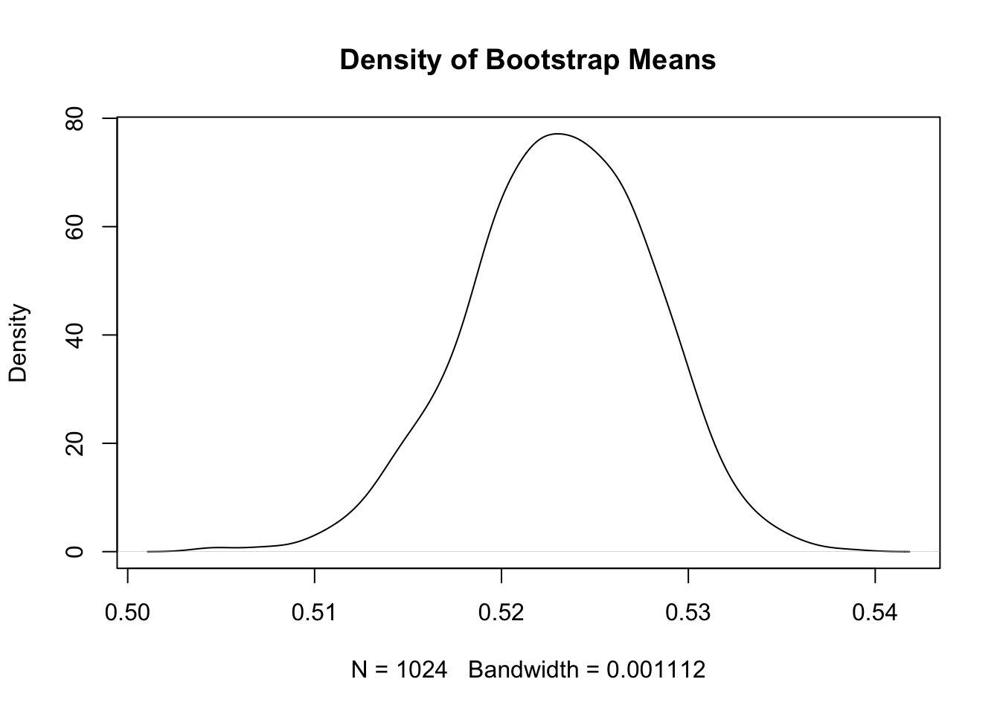

(0.52 - 0.5) / sqrt(0.25 / 10000)[1] 4The word “inference” in general refers to drawing conclusions from logical reasoning. In statistics, it refers to drawing conclusions in the presence of uncertainty. Why is there uncertainty in the first place? The main reason is sampling uncertainty. Recall the following definitions.
Sampling uncertainty arises whenever there is a sample because there is no guarantee that a sample is representative of the population. Even if all of the observed characteristics are identical, there could be unobserved characteristics that diverge between the sample and the population. Despite this, we rely on data from samples because in most cases, it is very difficult or impossible to collect data on the entire population of interest. As long as we use statistics to quantify the uncertainty, samples do the trick.
Suppose you procure a coin that you believe is unfair. You flip it 10,000 times and get heads 52% of the time. We will use this sample to make some inference about the parameter of interest.
\[\begin{align*} H_0: \pi &= 0.5 \\ H_1: \pi &\neq 0.5 \end{align*}\]
Recall that for a Bernoulli random variable, which describes a coin flip, the mean is \(\pi\) and the standard deviation is \(\pi(1-\pi)\). Recall that the standard error is the standard deviation divided by the square root of the sample size, \(n\).
\(Z\)-statistic (Normal distribuion):
\[\begin{equation*} Z = \frac{\hat{\pi} - \pi}{\sqrt{\frac{\pi(1-\pi)}{n}}} = \frac{0.52 - 0.5}{\sqrt{\frac{0.25}{10000}}} \end{equation*}\]
(0.52 - 0.5) / sqrt(0.25 / 10000)[1] 4\(t\)-statistic (Student’s \(t\) distribution with \(n-1\) degrees of freedom):
\[\begin{equation*} t = \frac{\hat{\pi} - \pi}{\sqrt{\frac{\hat{\pi}(1-\hat{\pi})}{n}}} = \frac{0.52 - 0.5}{\sqrt{\frac{0.2496}{10000}}} \end{equation*}\]
(0.52 - 0.5) / sqrt(0.2496 / 10000)[1] 4.003204\[\begin{align*} \Pr\left(Z > \frac{\hat{\pi} - \pi}{\sqrt{\frac{\pi(1-\pi)}{n}}} \quad \bigcup \quad Z < \frac{\hat{\pi} - \pi}{\sqrt{\frac{\pi(1-\pi)}{n}}}\right) = 2 \Pr\left(Z > \frac{\vert\hat{\pi} - \pi\vert}{\sqrt{\frac{\pi(1-\pi)}{n}}}\right). \end{align*}\]
You may recall using statistical tables in the back of your textbook or online to compute \(p\)-values. You can use R for it too! The below functions compute the lower tail probability. So for some input quantile \(x\), pnorm(x) gives \(\Pr(Z \leq x)\). You can use the symmetry to get the \(p\)-value or change the argument lower.tail=FALSE. I show both ways below.
# Normal distribution
2 * pnorm(4, lower.tail = FALSE)[1] 6.334248e-052 * (1 - pnorm(4))[1] 6.334248e-05# Student's t distribution with n-1 degrees of freedom
2 * pt(4.003, df = 99, lower.tail = FALSE)[1] 0.00012092552 * (1 - pt(4.003, df = 99))[1] 0.0001209255It is common to use certain cut-offs for \(p\)-values, such as 0.1, 0.05, 0.01, or 0.001. Given how small the \(p\)-value is here, it is common to see them reported as \(p < 0.001\). We can reject the null hypothesis at the 99.9% level.
Analogously, we can construct a confidence interval around the estimated statistic. For a two-sided \(Z\)-test:
\[\begin{align*} CI_{\alpha} = \left[\hat{\pi} - z^*_{\alpha/2} \sqrt{\frac{\pi(1-\pi)}{n}}, \hat{\pi} + z^*_{\alpha/2} \sqrt{\frac{\pi(1-\pi)}{n}} \right] \end{align*}\]
The confidence interval is analogous for the \(t\)-test, but use the critical value from the Student’s \(t\)-distribution. The confidence interval for a one-sided test will sue the critical value \(z^*_{\alpha}\). The lower bound will be \(-\infty\) if the alternative hypothesis is \(\leq\) or the upper bound will be \(\infty\) if the alternative hypothesis is \(\geq\).
Let us use R to construct the 95% confidence interval. Notice we use qnorm() and `qt() to get the quantile of the distribution given a probability. For both cases, it is approximately \([0.495, 0.545]\).
# Normal distribution
0.52 - qnorm(0.05/2, lower.tail = FALSE) * sqrt(0.25 / 10000)[1] 0.51020020.52 + qnorm(0.05/2, lower.tail = FALSE) * sqrt(0.25 / 10000)[1] 0.5297998# Student's t distribution
0.52 - qt(0.05/2, df = 99, lower.tail = FALSE) * sqrt(0.2496 / 10000)[1] 0.51008690.52 + qt(0.05/2, df = 99, lower.tail = FALSE) * sqrt(0.2496 / 10000)[1] 0.5299131If the confidence interval overlaps the true parameter, then we cannot reject the null hypothesis. Because 0.5 is not in the confidence interval, we can reject the null hypothesis with 95% confidence.
In many cases, the \(Z\)-test or \(t\)-test are adequate for hypothesis testing. However, they rely on assumptions about the distribution of the estimator. If we have the sample mean, like we do for the coin example above, that is completely fine due to the Central Limit Theorem. What if we are interested in another statistic, like the median? Bootstrapping provides a non-parametric approach for these situations.
Suppose the same set-up as above. Let us do the same test with bootstrapping. However, we need the data in order to do the bootstrapping, so let me simulate it here. In reality, we do not know \(\pi\), the true probability of getting heads. To simulate data, we need to specify this probability. Suppose it is 0.53. We get a sample mean of 0.523.
library(dplyr)
Attaching package: 'dplyr'The following objects are masked from 'package:stats':
filter, lagThe following objects are masked from 'package:base':
intersect, setdiff, setequal, unionset.seed(470500) # Remember to set the seed so that the results are reproducible
# Define the data
pi_true <- 0.53
# 0 is tails, 1 is heads
flips <- rbinom(10000, size = 1, prob = pi_true)
# pi hat is the sample average
pi_hat <- mean(flips)
pi_hat[1] 0.523# I will make flips a tibble to be clear about the bootstrap steps below
flips_tib <- tibble(flip_id = 1:10000,
outcome = flips)\[\begin{align*} H_0: \pi &= 0.5 \\ H_1: \pi &\neq 0.5 \end{align*}\]
set.seed(407500)
# Resample the IDs
b1_ids <- sample(flips_tib$flip_id, size = nrow(flips_tib), replace = TRUE)
# Notice how we could theoretically get more than one instance
head(table(b1_ids))b1_ids
1 2 3 4 5 7
1 1 2 2 2 1 # We don't want the IDs, we just want the outcomes of the flips
b1 <- flips_tib$outcome[b1_ids]
# Calculate the sample mean for this bootstrap
b1_mean <- mean(b1)
b1_mean[1] 0.5167That was one bootstrap. We want many bootstrap resamples. Let us select \(B = 1,024\). It is conventional to choose exponents of 2 for the number of bootstraps. This has efficiency reasons that are outside the scope of this class.
library(magrittr) # optional, but I want to use pipes
set.seed(470500)
B <- 1024
bs <- vector()
for (b in 1:B) {
bs[b] <- sample(flips_tib$outcome, size = nrow(flips_tib), replace = TRUE) %>%
mean()
}
# Let us plot the density of the sample means from all the bootstraps
plot(density(bs), main = "Density of Bootstrap Means")
# 95% confidence interval
quantile(bs, c(0.025, 0.975)) 2.5% 97.5%
0.5130725 0.5323000 The bootstrapped \(p\)-value is outside the scope of this class.
Calculate the median of the distribution of amount won.
Suppose we want to test if the median is equal to 1,100. What are the null and alternative hypotheses?
Write a loop to draw 1,024 bootstrap resamples. Here is an outline of the code. You fill in the commands.
# Set a seed
# Set the number of bootstraps
# Define an empty vector to store the output
# Start the loop
# Inside the loop:
# Resample df$AmountWon with replacement
# Take the mean of the resample
# Store the mean to the vectorThe data on lottery winners come from the Texas Data Portal. See Casella and Berger (2002) for a formal discussion of inference.